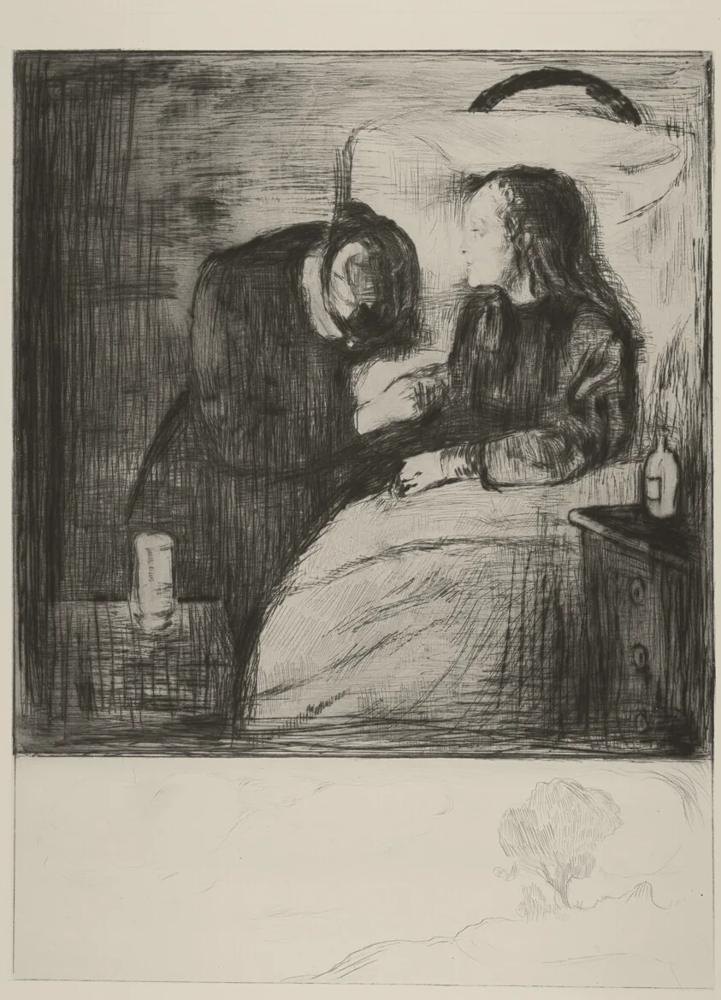

· Edición 79 · 4 min de lectura
La tuberculosis tiene cura y aun así sube en Colombia desde 2021

La tuberculosis tiene cura y aun así sube en Colombia desde 2021
Ver todo el tema, de principio a fin →
En pocas palabras. Cómo crece una enfermedad que se cura con pastillas? En Colombia, la tuberculosis sube desde 2021 y solo 62 de cada 100 enfermos nuevos terminan bien el tratamiento; como se contagia al respirar, cada tratamiento a medias pone en riesgo a la familia y al vecino. En Perú, apoyar a los hogares durante el tratamiento subió los curados.
El dato curioso. En 1890, Robert Koch, el alemán que había descubierto el microbio de la tuberculosis, anunció en Berlín un remedio: su «linfa». Un médico británico que escribía novelas de detectives, Arthur Conan Doyle, el creador de Sherlock Holmes, llegó a Berlín el 16 de noviembre, revisó los casos y escribió al Daily Telegraph que el remedio era prematuro, aunque útil para diagnosticar. Acertó: la linfa, hoy tuberculina, no curaba, pero sirvió décadas para detectar la infección.
¿Qué pasa? En la Gran Bretaña de la posguerra, la estreptomicina, el primer antibiótico contra la tuberculosis, no alcanzaba: el Gobierno había comprado 50 kilos. El estadístico Austin Bradford Hill propuso repartirla al azar. En 1948 salió el primer ensayo aleatorizado publicado: la escasez inventó el sorteo justo.
Hoy la tuberculosis se previene y se cura con pastillas, según la OMS. Aun así, en 2025 mató a 1,13 millones de personas en el mundo.
En Colombia, en 2024, se reportaron 20.832 casos, unos 57 al día, y se notificaron 1.381 muertes, casi cuatro al día, según cifras preliminares del Instituto Nacional de Salud (INS).
Fuente: INS, informes de evento 2023 y 2024 y boletín de la semana 11 de 2026 (2025, preliminar). Se omiten 2020 y 2021, cuando la pandemia escondió casos.
Ver datos
| casos por 100.000 | |
|---|---|
| 2019 | 28,2 |
| 2023 | 35,6 |
| 2024 | 37,4 |
| 2025 | 38,5 |
¿Y a mí qué? Se contagia al toser, en la casa o el bus: basta compartir el aire. (Conocimiento general.)
¿Por qué pasa? Tratarla es como apagar un incendio: cuando deja de verse humo quedan brasas, y si uno se va, el fuego vuelve. (Conocimiento general.)
- El tratamiento es largo. El enfermo mejora antes de terminar, y cada control cuesta pasajes y días de trabajo. En 2022, 10 de cada 100 lo abandonaron.
- Se espera al enfermo. Mientras llega a consulta, contagia. (Conocimiento general.)
- Las cárceles la multiplican. En 2024 hubo 1.710 casos entre presos: unos 1.560 por cada 100.000, unas 40 veces la tasa del país, según el INS.
¿Alguien lo ha resuelto? En 32 barrios pobres de Perú, un ensayo dio a los hogares hasta 230 dólares por cumplir los controles. Terminaron bien 64 de cada 100 enfermos, frente a 53 sin el apoyo.
En Ca Mau (Vietnam), revisar durante tres años a todos los mayores de 15 años con una prueba rápida de flema dejó casi la mitad menos de tuberculosis que donde se esperaba al enfermo, según el New England Journal of Medicine (2019).
Lo que cambiaría el siglo es una vacuna para adultos: la M72 se prueba en unas 20.000 personas. Si protege a la mitad, como sugirió un ensayo anterior, la OMS calcula que evitaría hasta 8,5 millones de muertes entre 2025 y 2050.
Pero ojo.
- Buscar una vez no basta. En 12 cárceles de Brasil, una ronda de pruebas a todos los presos no bajó los casos siguientes.
- Parte del alza es volver a buscar. La pandemia escondió casos en 2020 y 2021; pero 2025 quedó muy por encima de 2019.
- La vacuna aún no está probada. Faltan años de ensayo.
Lo que ya habíamos contado. El 6 de noviembre escribimos sobre las bacterias que dejan de responder a los antibióticos (ver esa edición). Una tuberculosis mal tratada es una de las vías.
Qué hacer con esto
Para ir pensando. Una tos de más de dos semanas merece consulta y prueba de esputo, que no se cobra al paciente. (Conocimiento general.)
Cómo prepararse. Si alguien en la casa se trata, acompáñelo hasta el último día; los demás, a revisarse.
Ojo con el cuento. Un «plan para eliminar la tuberculosis» no es menos tuberculosis: el anterior tenía metas para 2025 que no se cumplieron, según el INS. Pregunte cuántos se curaron.
Dos lecturas
Las dos posturas sobre el tema, en su mejor versión
Pagar para que nadie abandone. El tratamiento lo pierde quien no tiene para el pasaje o no puede faltar al trabajo. Un apoyo en dinero, atado a los controles, cuesta menos que un caso resistente y protege a todos los que respiran el mismo aire.
Primero, un servicio que funcione. Si el control queda lejos, las pruebas tardan y los medicamentos faltan, el dinero no lo arregla. Mejor llevar el tratamiento a la casa y al barrio, y acortarlo, antes que pagar por cumplir citas.
Quién decide y cuándo
Quién decide. El Ministerio de Salud, que debe poner en marcha la Ley 2616, sancionada el 30 de julio, y su plan 2025-2031. En las cárceles, con el Inpec, que las administra.
Cuándo. El plan apunta a menos de 10 casos por cada 100.000 habitantes en 2031. No confirmamos un plazo para reglamentar la ley.
Cómo participar. Un derecho de petición al Ministerio pregunta cómo va la ley.
Seguimiento de la decisión
Pendiente · sin fecha fija
Ministerio de Salud y Protección Social, con el Comité Asesor Nacional de Tuberculosis: Poner en marcha la política pública de la Ley 2616 de 2026 hacia la eliminación de la tuberculosis y cumplir el Plan Nacional 2025-2031, que se propone bajar a menos de 10 casos por cada 100.000 habitantes en 2031.
La ley se sancionó el 30 de julio de 2026. No confirmamos en el texto final si fija un plazo para reglamentarla. El plan anterior tenía metas de reducción para 2025 que no se cumplieron, según el INS.
La paradoja del día
Lo más absurdo de la edición, en dos líneas
En 1890, un escritor de novelas de detectives necesitó un día en Berlín para saber que el remedio no curaba. En 2026 el remedio sí cura; lo que falla es llegar hasta la última pastilla.
Para conversar
La pregunta. Si alguien deja el tratamiento y contagia a otros, ¿es un asunto suyo o de todos? ¿Qué haría para que nadie lo deje?
Para leer más
Libros para seguir con el tema
La montaña mágica, de Thomas Mann (1924; Edhasa, traducción de Isabel García Adánez, 2005). Una novela en un sanatorio de los Alpes, cuando la tuberculosis se trataba con reposo y aire de montaña, antes de los antibióticos.
La enfermedad y sus metáforas, de Susan Sontag (1978; Debolsillo, traducción de Mario Muchnik). Un ensayo sobre cómo hablamos de la tuberculosis y el cáncer, y cómo esas palabras alejan a los enfermos.
¿Le interesa ver las fuentes?
Todos los documentos y datos que usamos
31 fuentes: 8 académicas, 15 oficiales, 1 de una organización, 5 de prensa, 2 de referencia.
- Oficial Organización Mundial de la Salud (12 de noviembre de 2026). Amid challenges, countries increase domestic investment to protect progress against tuberculosis
- Oficial Organización Mundial de la Salud. Global tuberculosis report 2026
- Prensa Health Policy Watch (noviembre de 2026). Global tuberculosis burden declining, but five years behind schedule
- Oficial Organización Mundial de la Salud, nota descriptiva. Tuberculosis
- Oficial Instituto Nacional de Salud (INS). Informe de evento 2024: tuberculosis
- Oficial Instituto Nacional de Salud (INS). Informe de evento 2023: tuberculosis
- Oficial Instituto Nacional de Salud (INS), boletín epidemiológico semanal. Semana epidemiológica 11 de 2026: tuberculosis, el fortalecimiento de la implementación
- Oficial Instituto Nacional de Salud (INS), boletín epidemiológico semanal. Semana epidemiológica 12 de 2025: 24 de marzo, Día Mundial de la Tuberculosis
- Oficial Ministerio de Salud y Protección Social. Plan Nacional para Acelerar la Eliminación de la Tuberculosis 2025-2031
- Oficial Ministerio de Salud y Protección Social. Informe de evento tuberculosis, año 2022
- Oficial Secretaría de Salud de Bucaramanga (marzo de 2026). Boletín epidemiológico 10, semana 09: tuberculosis
- Académica Revista de la Facultad de Medicina, Universidad Nacional de Colombia. Características epidemiológicas de la tuberculosis en Colombia
- Prensa Infobae (6 de mayo de 2026). La tuberculosis vuelve a crecer en Colombia y prende las alarmas por casos y cepas resistentes
- Prensa Vanguardia (6 de mayo de 2026). Colombia en alerta por tuberculosis: aumentan casos y preocupan cifras en 2026
- Académica Wingfield y otros, Bulletin of the World Health Organization (2017), Escuela de Medicina Tropical de Liverpool. A randomized controlled study of socioeconomic support to enhance tuberculosis prevention and treatment, Peru
- Académica Marks y otros, New England Journal of Medicine (3 de octubre de 2019), en PubMed. Community-wide Screening for Tuberculosis in a High-Prevalence Setting
- Académica BMC Infectious Diseases (octubre de 2016), en PubMed Central. Impact of mass-screening on tuberculosis incidence in a prospective cohort of Brazilian prisoners
- Organización Instituto de Investigación Médica de la Fundación Gates (abril de 2025). The Phase 3 clinical trial of the M72/AS01E tuberculosis vaccine candidate has reached full enrollment
- Prensa STAT News (28 de abril de 2025). Major tuberculosis vaccine trial completes enrollment faster than expected
- Académica CIDRAP, Universidad de Minnesota. TB vaccine candidate shows sustained protection
- Oficial Organización Mundial de la Salud (13 de diciembre de 2022). WHO-commissioned study makes strong health and economic argument for investing in new TB vaccines
- Académica James Lind Library. Medical Research Council (1948): Streptomycin treatment of pulmonary tuberculosis
- Académica James Lind Library. The MRC randomized trial of streptomycin and its legacy: a view from the clinical front line
- Oficial Centros para el Control y la Prevención de Enfermedades de Estados Unidos (CDC), MMWR. Perspectives in Disease Prevention and Health Promotion: Robert Koch and tuberculosis
- Prensa PBS NewsHour, columna de Howard Markel. How Dr. Arthur Conan Doyle cracked the case of the tuberculosis remedy
- Oficial Organización Panamericana de la Salud. Día Mundial de la Tuberculosis
- Oficial Función Pública, Gestor Normativo. Ley 2616 de 2026, política pública de salud y protección social hacia la eliminación de la tuberculosis
- Académica Congreso Visible, Universidad de los Andes. Proyecto de ley 021 de 2024 Cámara, 459 de 2025 Senado: política pública de salud y protección social a favor de las personas afectadas por la tuberculosis
- Oficial Presidencia de la República (DAPRE). Leyes 2026
- Referencia Marcial Pons (ficha del libro). La montaña mágica, de Thomas Mann (Edhasa; traducción de Isabel García Adánez)
- Referencia Documenta (ficha del libro). La enfermedad y sus metáforas. El sida y sus metáforas, de Susan Sontag (Debolsillo; traducción de Mario Muchnik)
Glosario
Las palabras técnicas, explicadas
- Tuberculosis: infección causada por una bacteria que ataca sobre todo los pulmones. Se contagia por el aire. Muchas personas tienen la bacteria dormida y no enferman.
- Esputo: la flema que sale de los pulmones al toser. Con ella se hacen las pruebas de tuberculosis.
- Tuberculosis farmacorresistente: la que no responde a los medicamentos de siempre. Exige tratamientos más largos y caros.
- Ensayo aleatorizado: estudio que reparte a las personas al azar entre quienes reciben algo y quienes no, para comparar de forma justa.
- Tuberculina: extracto de la bacteria que Koch presentó como remedio en 1890. No curaba, pero sirvió para pruebas en la piel que muestran si alguien tiene la infección.
- Tasa por cada 100.000 habitantes: cuántos casos hay en un grupo de 100.000 personas. Sirve para comparar lugares de distinto tamaño.
Nota metodológica
Cómo se hizo esta edición y qué no pudimos verificar
El horizonte. ¿Cambia el rumbo de cómo vive la gente, en Colombia o en el mundo, dentro de 10 a 50 años? Sí. La tuberculosis es una de las infecciones que más matan en el mundo y en Colombia lleva cinco años subiendo. Lo que se decida ahora (tratamientos que se terminan, búsqueda activa, cárceles menos llenas y una vacuna para adultos) define si en 2050 es una enfermedad rara o una más resistente. La proyección de fondo es la de la OMS: una vacuna que proteja a la mitad evitaría entre 4,6 y 8,5 millones de muertes entre 2025 y 2050.
El filtro. Entra por la puerta del nudo, con las cuatro condiciones: persiste (la tasa sube desde 2021 y en 2025 quedó por encima de la de 2019, según el INS); tiene un mecanismo (un tratamiento largo que se abandona cuando el enfermo se siente bien, un sistema que espera a que el enfermo llegue y cárceles hacinadas donde el contagio se multiplica); alguien lo puede cambiar (el Ministerio de Salud, las EPS, las secretarías de salud, el Inpec y la Unidad de Servicios Penitenciarios y Carcelarios); y causa daño comprobable (1.381 muertes preliminares en 2024 y 38 de cada 100 enfermos nuevos sin un tratamiento terminado con éxito en la cohorte de 2023). Es un nudo estructural: si no se desata, alimenta casos resistentes durante décadas. La puerta de entrada es el informe mundial de la OMS del 12 de noviembre, que veníamos aplazando porque las ediciones anteriores tenían demasiada salud, y la ley sancionada en julio. Es martes; el lunes fue un nudo de educación. El tema también es del mundo y de ciencia (la vacuna).
Puntaje. De 1 a 3 en cada criterio; peso en la vida y horizonte valen doble (máximo 24). Solo entra un tema con horizonte 3.
| Tema | Puerta | ¿Cambia el rumbo en 10 a 50 años? | Alcance | Peso | Horizonte | Cercanía | Margen | Mirada | Total | Resultado |
|---|---|---|---|---|---|---|---|---|---|---|
| Tuberculosis en Colombia: sube y se cura a medias | nudo | Sí: si la enfermedad se vuelve rara o resistente | 2 | 3 | 3 | 3 | 2 | 3 | 22 | Elegido (edición 79) |
| Estudio económico de la OCDE sobre Colombia | fondo | A medias: productividad e informalidad, sin hecho nuevo | 3 | 2 | 2 | 3 | 1 | 1 | 17 | No pasa el horizonte |
| Faltante de Colpensiones | contexto | No: caja de fin de año | 2 | 2 | 1 | 3 | 2 | 1 | 14 | Coyuntura |
| Inflación y salario mínimo | contexto | No | 3 | 2 | 1 | 3 | 2 | 1 | 15 | Coyuntura |
| Regreso del director de Nvidia (mundo) | contexto | No | 1 | 1 | 1 | 1 | 1 | 1 | 8 | Sin canal hacia Colombia |
En el tema elegido, el alcance vale 2: son unos 21.000 enfermos al año, aunque el riesgo de contagio es de todos. La mirada vale 3: la prensa contó las alertas por departamento en mayo; no encontramos quien uniera la cifra de curados, la ley nueva y los ensayos que funcionaron. Ningún otro tema llega a 19, así que hoy hay una sola edición.
Hicimos unas 40 búsquedas en español e inglés. No pudimos abrir los documentos completos: ni el informe de la OMS, ni los del INS y el Ministerio de Salud, ni la ley ni los estudios. Trabajamos con resúmenes, fragmentos y resultados de búsqueda, y no les atribuimos más de lo que dicen. De 32 fuentes, 27 no son de prensa.
Quedó sin verificar o con límites:
- Las tasas. Las fuentes del INS dan cifras un poco distintas para el mismo año (en 2024, entre 36,78 y 37,44 por cada 100.000); usamos la del informe de evento. La de 2025 (38,52) es preliminar.
- Las muertes. Las 1.381 de 2024 son preliminares del INS; el plan del Ministerio menciona 1.517, al parecer una estimación de la OMS, y un análisis del INS con los registros de defunción del DANE cuenta 1.500 o más cada año entre 2022 y 2024. El conteo de notificaciones se queda corto: la cifra real es, como mínimo, la que damos. «57 al día» y «casi cuatro al día» son nuestra cuenta.
- Las cárceles. El 1.560 por cada 100.000 viene del informe de evento de 2024; el fragmento que leímos no deja claro si es de ese año. «Unas 40 veces» es nuestra cuenta frente a la tasa nacional.
- Los curados. El 62 de cada 100 es un análisis preliminar de la cohorte de 2023 citado en el plan del Ministerio; la meta de la OMS es más de 90. El 10 de cada 100 que abandonó es de 2022.
- La ley. Conocemos la Ley 2616 por los registros de Función Pública, la Presidencia y Congreso Visible. No leímos el texto final: no sabemos si fija plazos ni qué apoyos a pacientes quedaron.
- La meta de 2031. Menos de 10 casos por cada 100.000 la tomamos de un boletín de la Secretaría de Salud de Bucaramanga que resume el plan nacional.
- Perú. La diferencia (64 frente a 53) está en el límite de lo que se puede distinguir del azar, según el propio estudio.
- La vacuna. El 50% de protección del ensayo anterior tiene un margen amplio (de 12% a 71%). La cifra de muertes evitadas es un modelo de un estudio encargado por la OMS en 2022.
- El dato curioso. La fecha de llegada de Conan Doyle y su carta vienen de la columna del historiador Howard Markel; su papel en el episodio a veces se exagera.
- El ensayo de 1948. Que fuera el primer ensayo aleatorizado publicado es la valoración de Richard Doll que recoge la James Lind Library; hubo un ensayo de tos ferina que sorteó antes los tratamientos.
La imagen es «La niña enferma», punta seca de Edvard Munch de 1894, de la colección abierta del Art Institute of Chicago (dominio público). Commons rechazó nuestras consultas por exceso de pedidos.
Los libros: ninguno está en el catálogo de Santo & Seña, así que van sin enlace. La editorial y la traducción las confirmamos en fichas de librerías.